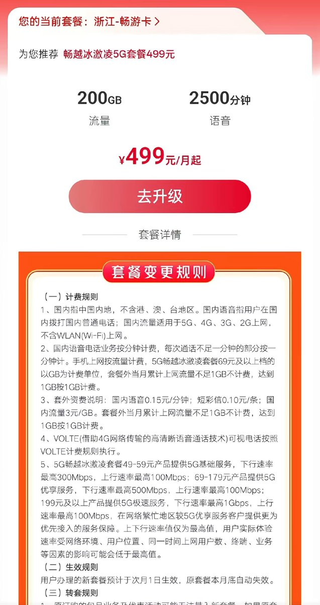
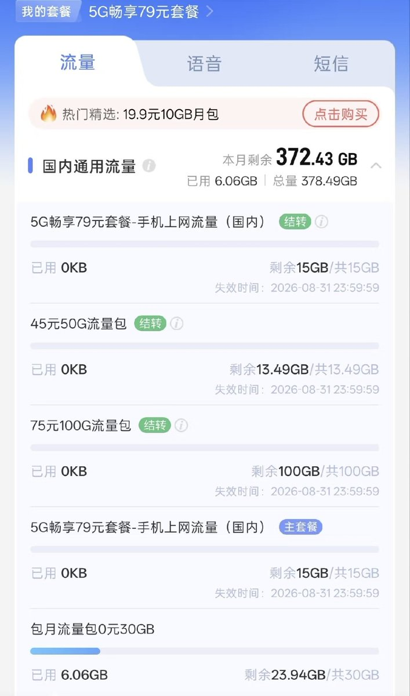

利于垄断行业的规定，制定就是快，利于百姓的就是一拖再拖，再么就是技术什么有障碍。7月31号发通知，8月1号执行，衔接的挺好。以前也没有便宜的，都是渠道代理的流量卡，现在不让了那就没了，垄断了
根据2026年7月31日三大运营商联合发布的公告，自8月1日起，全面停止第三方互联网渠道的手机号卡办理服务，旨在保障用户权益和数据信息安全
按照新规，办理流量卡，需前往运营商APP，或者是线下营业厅办理。限制最低套餐为39元20G ，上不封顶
还是早办早享受，家里用的电信79一个月，250G流量+1000分钟通话+1000M宽带。一张副卡免费，甚至还有公网IPv4，现在要办都办不到了哈哈
当时听营业厅朋友说，如果不带宽带和副卡，一个月就只要39。也利好线下的卡商，比如4年合约的校园卡这类的短期折扣不会结束
根据2026年7月31日三大运营商联合发布的公告，自8月1日起，全面停止第三方互联网渠道的手机号卡办理服务，旨在保障用户权益和数据信息安全
按照新规，办理流量卡，需前往运营商APP，或者是线下营业厅办理。限制最低套餐为39元20G ，上不封顶
还是早办早享受，家里用的电信79一个月，250G流量+1000分钟通话+1000M宽带。一张副卡免费，甚至还有公网IPv4，现在要办都办不到了哈哈
当时听营业厅朋友说，如果不带宽带和副卡，一个月就只要39。也利好线下的卡商，比如4年合约的校园卡这类的短期折扣不会结束

